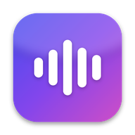

Push to Chat User Guide
Push to Chat is a voice chat app that's patient with stuttering. You speak, it listens without rushing you or finishing your sentences, and it answers out loud like a friend. This guide walks you through everything, from getting your keys to your first conversation.
1. How it works
Every time you talk, three services work together, one after the other:
- Speech-to-Text turns your voice into text.
- The AI Engine reads that text and writes a reply.
- Text-to-Speech reads the reply to you out loud.
You choose which company does each step and connect your own account with an API key, a password-like code the company gives you. This is called "bring your own key". The app itself is free.
Every provider in the app can be used for free. They were chosen because each one gives you free credits or a free plan, and none of them asks for a credit card to sign up.
There are many other speech and AI services, such as OpenAI, Anthropic (Claude), Google Cloud's Speech-to-Text and Text-to-Speech, Amazon Web Services and Microsoft Azure. They aren't included because they need a payment method before you can use them.
Google Gemini is the exception within Google: its API is offered free through Google AI Studio with just a Google account, which is why it's available here as an AI Engine.
2. What you need
- A device with a microphone and speakers: a phone, tablet or computer. Headphones help in noisy places.
- A modern browser: Safari, Chrome, Edge or Firefox.
- An internet connection.
- Three API keys, one for each step. Section 4 shows how to get them:
- one Speech-to-Text key: Deepgram, ElevenLabs, Cartesia or Groq
- one Text-to-Speech key: Deepgram, ElevenLabs or Cartesia
- one AI Engine key: Mistral AI, Google Gemini or Groq
Tip: you may only need two accounts. The same company can handle Speech-to-Text and Text-to-Speech. For example, one Cartesia account covers both, plus one AI Engine account. A Groq key also does double duty: it works for Speech-to-Text and as the AI Engine.
Which providers should I pick?
| If you want… | Speech-to-Text | Text-to-Speech |
|---|---|---|
| The fewest accounts, any of 32 languages | Cartesia | Cartesia |
| The fewest accounts, any of 32 languages, with a credit balance shown in the app | ElevenLabs | ElevenLabs |
| Low-cost listening plus a very natural voice (English, Spanish, French, German, Italian only) | Deepgram | ElevenLabs or Cartesia |
| Deepgram for everything (English, Spanish, French, German, Italian only) | Deepgram | Deepgram |
| One Groq key for listening and thinking, any of 32 languages | Groq | ElevenLabs or Cartesia (Groq has no voice) |
For the AI Engine, any of the three works well. For the quickest replies, try Groq first.
3. Open and install the app
- Open push-to-chat.keremk.workers.dev in your browser.
- Optional but recommended: add it to your home screen so it opens like a regular app.
- iPhone / iPad (Safari): tap the Share button (the square with an arrow), scroll down, tap Add to Home Screen, then Add.
- Android (Chrome): tap the ⋮ menu, then Add to Home screen or Install app.
- Computer (Chrome or Edge): click the install icon at the right end of the address bar, then Install.
4. Get your API keys
For each provider you chose: sign up, find the API Keys section of your account, create a key, and copy it. Keep the page open until you've pasted the key into the app, because some providers only show a new key once.
Treat API keys like passwords. Anyone with your key can use your account. Never post a key online or send it in a message. If one leaks, delete it in the provider's dashboard and make a new one.
The app never stores your API keys anywhere but your own device. Everything happens locally, in your browser: your keys are saved only on your device, and each one is sent only to its own provider when the app talks to it. There's no Push to Chat server or account that ever receives, sees or keeps your keys. See Privacy and your keys.
How much free use you get
Every provider below is free to sign up for, with no credit card. The chat-time estimates assume a typical exchange: you speak for about 15 seconds and the assistant answers with two or three sentences (also about 15 seconds of speech).
| Provider | Free credit | Roughly how much conversation |
|---|---|---|
| Deepgram ★ Biggest pool | $200, one-time, never expires | Well over 100 hours using it for both listening and speaking, and far more for listening only. For most people this lasts months or years. |
| Cartesia ★ Renews monthly | 20,000 credits every month | About 35–40 minutes a month (roughly 75 exchanges) using it for both sides. Speaking uses most of the credits, and listening costs very little. |
| ElevenLabs ★ Renews monthly | 10,000 credits every month | About 40 minutes a month (roughly 80 exchanges) for speaking only, or about 25 minutes a month (roughly 50 exchanges) using it for both sides. The app shows your remaining balance. |
| Google Gemini ★ Renews daily | Free tier with a daily request limit | Hundreds of replies a day, far more than a normal day of chatting. Limits reset every day. |
| Groq ★ Renews daily | Free tier with daily limits | Hundreds of replies a day as the AI Engine, and around 2,000 transcriptions a day as Speech-to-Text. Limits reset every day. |
| Mistral AI ★ Renews monthly | Free "Experiment" plan with a large monthly allowance | Far more than personal chatting needs. It needs a phone number to verify your account. |
Best value for long conversations: Deepgram for listening (its $200 lasts a very long time) plus Cartesia or ElevenLabs for the voice, both of which top up every month. For languages beyond the main five, Cartesia gives you the most free speaking time each month.
These figures are estimates based on each provider's published free offer, and providers change their offers from time to time. Check the provider's pricing page for the latest details.
Speech providers
- Deepgram ⚡ Near-instant (console.deepgram.com): in the console, open API Keys and create a new key.
- ElevenLabs Fast, a bit slower than Deepgram (elevenlabs.io): in your account, open the developer settings, then API Keys, and create a key.
- If you restrict the key's permissions, allow Text to Speech, Speech to Text, and read access to User. The app needs the last one to show your credit balance.
- You can also set a credit limit on the key, which is a good safety net.
- Cartesia ⚡ Near-instant (play.cartesia.ai): open API Keys and create a new key.
- Groq (Speech-to-Text only) ⚡ Very fast (console.groq.com/keys): the same key you use for Groq as an AI Engine. If you've already entered it there, it's filled in for you.
AI Engine providers
- Google Gemini Can be slow at busy times (aistudio.google.com/apikey): click Create API key.
- Demand for Google's models is very high, so replies can sometimes take a while to arrive. If you don't get an answer right away, the app isn't broken: it's waiting on Google. For consistently quick replies, use Groq or Mistral AI.
- Groq ⚡ Near-instant (console.groq.com/keys): click Create API Key.
- Mistral AI ⚡ Near-instant (console.mistral.ai): open API Keys and create a new key. Choose the free Experiment plan and verify your phone number. On the free plan, Mistral may use your conversations to improve its models; you can opt out in its privacy settings.
5. Set up the app, step by step
You only do this once per device. The app remembers everything you enter, but only on your own device, in your browser's storage. Nothing you enter (keys, choices or instructions) is sent to or saved by the app's owner.
- UI Language (top left, top of the screen on phones): choose the language for the app's buttons and labels. This doesn't change the language you talk in.
- Chat Language (next to it): choose the language you'll speak.
- Some languages are tagged with provider names, like Japanese · ElevenLabs, Cartesia, Groq. Only those providers support them (Groq only listens; it has no voice).
- If you pick one, the app switches your providers automatically when needed. See Languages.
- Speech-to-Text Provider: choose Deepgram, ElevenLabs, Cartesia or Groq, then paste that provider's key into the box next to it.
- After a moment, a line appears under the box. Green means the key works.
- See key status messages for what the other colors mean.
- Text-to-Speech Provider: choose a provider and paste its key.
- If it's the same provider as Speech-to-Text, the key is usually filled in for you.
- Assistant Voice Persona: choose the voice you'll hear.
- With Cartesia, the list shows native voices for your chat language once your key is entered.
- Speaking Speed (next to the voice): choose how fast the assistant talks, from 0.75× (slower) to 1.3× (faster). 1× is the normal speed. You can change it at any time, even while the assistant is talking.
- AI Engine (LLM) Provider: choose Mistral AI, Google Gemini or Groq, and paste its key.
- Optional: Assistant Instructions. This box tells the assistant how to behave.
- By default, it's set up to be patient with stuttering, to never finish your sentences, and to answer briefly and naturally.
- You can edit it, and your version is saved. To go back to the original, empty the box completely and click outside it. The original comes back right away.
When all three key lines are green, you're ready.
6. Have a conversation
On a phone or tablet
- Tap the large status box that says READY.
- The first time, your browser asks for permission to use the microphone. Tap Allow.
- The box turns to RECORDING.... Speak at your own pace. There's no time limit and nothing will interrupt you.
- When you've finished, tap the box again to send.
- The box shows PROCESSING... while your speech is transcribed and a reply is written. This usually takes a moment. With Google Gemini it can take longer at busy times, because the app is waiting on Google.
- The box shows AI SPEAKING... and you hear the reply. The assistant starts speaking as soon as its first sentence is ready, while the rest is still being written. Your words appear under User Prompt and the reply under Assistant Response.
- When the reply ends, the box returns to READY. Tap it to answer.
To stop a reply early, tap the box while it's speaking. It goes straight back to READY.
On a computer (keyboard)
| Key | What it does |
|---|---|
| Space | Start recording. While the assistant is speaking or thinking, it cuts the reply off and starts recording right away. |
| Enter | Stop recording and send. |
| Esc | Clear the conversation memory (start fresh). |
You can also click the status box, just like tapping on a phone. Space and Enter don't work while you're typing in a text box, so click an empty part of the page first. Esc works anywhere.
Typing instead of speaking
When speaking is hard, you can type. Use the Type a message instead… box in the User Prompt section, then press Send (or Enter). The assistant still answers out loud, and typed and spoken messages are part of the same conversation. Typing only needs an AI Engine key and a voice; no Speech-to-Text key is needed.
Your screen stays on
Once you start a conversation, the app keeps your screen from turning off or locking while it's open, so a reply is never cut off by the screen going dark. Switch to another app or close it, and your device's normal screen timeout returns.
Conversation memory
- The assistant remembers your last few exchanges (about four back-and-forths), so you can refer to what you just said.
- To start a brand-new conversation, press Esc or tap Clear Memory inside the status box.
- The memory is also cleared when you close or reload the app.
7. Everything on the screen
The status box
| Shows | Meaning | Tap or click it to… |
|---|---|---|
| READY | Waiting for you | Start recording |
| RECORDING... | Listening to you | Send what you said |
| PROCESSING... | Transcribing and writing a reply | Nothing (wait a moment, or press Space to cancel and speak again) |
| AI SPEAKING... | Playing the reply | Stop the reply |
| ERROR | Something went wrong; returns to READY after 3 seconds | See Troubleshooting |
Key status messages
The small line under each key box tells you whether that key works:
| Message | Meaning |
|---|---|
| Enter an API key for the selected model | No key has been entered for this provider yet. |
| Credits available | The key works. For Deepgram, Cartesia and the AI Engines, this confirms the key is valid. It doesn't show a balance. |
| Credits: 2,879 / 10,000 chars left | ElevenLabs only: the key works, and this is your remaining character balance for the month. |
| No credits available | The key didn't work: it may be mistyped, deleted, out of credits, or missing a permission. See Troubleshooting. |
Other controls
- User Prompt: what the app heard you say. Check it if a reply seems off; the transcription may have misheard you.
- Assistant Response: the text of the reply you heard.
- Clear Memory (ESC): forgets the current conversation.
- Enable Debug Inspector: shows technical details, like how long each step took and the full error message when something fails. Use Copy Debug Logs to copy them if you're reporting a problem.
- Type a message instead… (in the User Prompt section): type a message and send it without speaking.
- Speaking Speed: how fast the assistant talks.
- Theme (bottom of the app): System follows your device's light or dark setting; Light and Dark always use that look. This guide follows the same choice.
- Help (top of the app): opens this guide.
Each section with a small arrow (▼) can be collapsed by tapping its title, to keep the screen tidy.
8. Languages
- 32 chat languages are available.
- English, Spanish, French, German and Italian work with every provider, so you can mix and match freely (e.g. Deepgram listening with an ElevenLabs voice).
- All other languages are tagged with the providers that support them: ElevenLabs, Cartesia, Groq. ElevenLabs and Cartesia can listen and speak; Groq can only listen, so pair it with ElevenLabs or Cartesia for the voice.
What happens when you choose a tagged language:
- If Speech-to-Text or Text-to-Speech is set to a provider that can't handle it, that side switches automatically.
- The app prefers the provider your other side already uses, then one you've already saved a key for, then ElevenLabs.
- If the new provider has no key yet, its key line says Enter an API key. Paste one to continue.
If you later switch a side back to Deepgram while a tagged language is selected, the chat language resets to English.
Always speak the language selected as Chat Language. The Chat Language tells the Speech-to-Text service which language to listen for, and it only listens for that one.
If you speak a different language (for example, Mandarin while the Chat Language is English), the app can't understand you. You'll either get an ERROR saying no speech was detected, or a transcription that makes no sense.
To switch languages, change the Chat Language first, then speak. The assistant answers in the language you speak.
9. Privacy and your keys
- Your keys stay on your device. They're saved in your browser's storage on this device only. They're never sent to the app's owner or stored on any server.
- Each key goes only to its own provider. Your Deepgram key goes only to Deepgram, your Gemini key only to Google, and so on.
- One exception for ElevenLabs: if an ad or tracker blocker in your browser blocks ElevenLabs, the app automatically sends ElevenLabs requests through a small relay. The relay passes them straight through and stores nothing. Its source code is public.
- Your voice recordings and conversations are sent only to the providers you picked, to be processed. The app doesn't keep them after you close it.
- On a shared computer, remove your keys when you're done: clear each key box, or delete the site's data in your browser settings.
- Clearing your browser data for this site deletes your saved keys and settings. Keep your keys somewhere safe (for example, a password manager) so you can paste them in again.
10. Troubleshooting
A key says "No credits available"
- Paste the key again. Make sure you copied all of it, with no extra spaces.
- Check that the right provider is selected for that key.
- Log in to the provider's dashboard and check the key still exists and your account has credit.
- ElevenLabs: if you restricted the key, make sure it has Text to Speech, Speech to Text, and read access to User.
- Still red? Create a new key and try that.
Nothing happens when I tap READY, or I see "Microphone access denied"
The browser isn't allowed to use your microphone. Turn it back on:
- iPhone / iPad: open Settings → Apps → Safari → Microphone (on older iOS: Settings → Safari → Microphone) and choose Ask or Allow, then reopen the app.
- Chrome or Edge: click the icon at the left of the address bar, set Microphone to Allow, then reload.
- Firefox: click the microphone or lock icon in the address bar and remove the block, then reload.
Also make sure your Speech-to-Text and AI Engine keys are entered. The app won't start recording without them.
The status box shows ERROR
- Tick Enable Debug Inspector at the bottom of the app and try again.
- Read the message in the inspector. It names the step that failed (Speech-to-Text, AI Engine or Text-to-Speech) and the provider's reason.
- Common causes:
- An invalid or expired key
- An account that's out of credit
- "No speech detected": either nothing was heard (speak a little louder or closer to the microphone), or you spoke a different language than the Chat Language. See below.
- A rate limit (too many requests too quickly): wait a minute and try again
I spoke another language and got an ERROR or a strange transcription
The Speech-to-Text service only listens for the language selected as Chat Language. Speaking any other language, even a few words, can make it fail with "No speech detected" or turn your words into nonsense.
- Change the Chat Language to the language you want to speak.
- If it's tagged (e.g. · ElevenLabs, Cartesia), the app may switch providers; make sure the new provider has a key.
- Speak again.
Replies take a long time (PROCESSING stays on screen)
- Using Google Gemini? This is the most common cause. Google's models are in very high demand, so replies can be slow at busy times. The app isn't broken; it's waiting for Google to answer. Wait a little longer, or switch the AI Engine to Groq or Mistral AI, which usually reply almost instantly.
- With ElevenLabs, listening and speaking take slightly longer than with Deepgram or Cartesia. That's normal.
- A slow or unstable internet connection also slows every step.
- To see which step is slow, tick Enable Debug Inspector. It shows how long each step took.
I don't hear the reply
- Turn up your device's volume, and check that it's not connected to another speaker or headphones.
- Make sure the Text-to-Speech key line is green, and that a voice is selected.
It misunderstands what I say
- Check the Chat Language matches the language you're speaking.
- Try a different Speech-to-Text provider. Each handles accents and speech patterns a little differently.
- A quieter room or a headset microphone helps a lot.
Where do I see which version I have?
The version number is at the bottom left of the app. The app updates itself: when a new version comes out, reopen or reload the app once or twice to get it.
← Back to the app